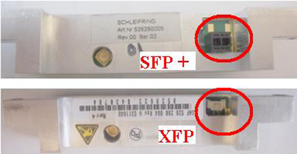

Illustration 3: Slipring Coupler removal

Illustration 3: Slipring Coupler removal
The XFP and SFP couplers are different. The power connector is different, see Illustration 4 for an example of the two versions of the coupler. The SFP+ has a larger power connector.
Illustration 4: XFP and SFP couplers
